1 - Introduzione
1.1 - Prerequisiti
L'utente deve possedere una connessione ad internet funzionante e un web browser (Google
ChromeG versione 41 o superiore, Mozilla FirefoxG 37 o superiore, SafariG versione 8 o superiore,
OperaG versione 28 o superiore, Internet ExplorerG versione 9 o superiore).
1.2 - Glossario
Per rendere chiaro e non ambiguo il contenuto del manuale utente è stato realizzato
un apposito glossario che contiene le de
nizioni per i termini tecnici, speci
ci e di dominio e
acronimi, per rendere la documentazione il più possibile chiara ed univocamente interpretabile.
Esso è consultabile nell'apposita sezione posta alla
fine di questo documento.
I vocaboli in questione sono facilmente riconoscibili poichè seguiti dal carattere 'G'.
2 - Premi
2.1 - Pagina iniziale
La pagina iniziale si presenta come in
figura.
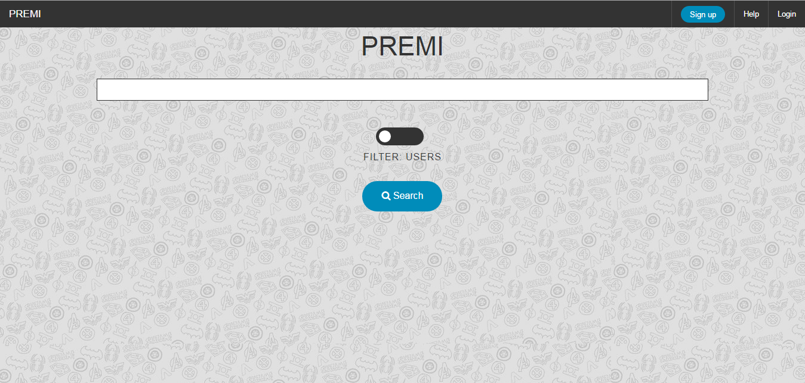
Nella parte in alto è presente una barra di colore nero con 4 pulsanti. Il pulsante PREMI
permette all'utente di tornare alla pagina iniziale in qualsiasi momento. Il pulsante Sign Up
permette ad un utente di registrarsi al sito. Il pulsante Help permette all'utente di visualizzare
il manuale utente. Il pulsante Login permette ad un utente già registrato di eettuare l'accesso
al sito. Nella parte centrale della pagina viene visualizzato il nome dell'applicativo PREMI,
sotto ad esso si trova la barra adibita alla ricerca con annesso il fi
ltro per la ricerca e il pulsante
Search che permette di avviare la ricerca. Tutte le funzionalità di tali pulsanti sono esplicitate
nelle sezioni seguenti.
2.2 - Registrazione
Per creare un nuovo account utente è necessario premere il pulsante Sign Up posto nell'angolo
superiore destro dello schermo. Si aprirà un pop-upG nel quale saranno richieste le informazioni
necessarie per registrare il nuovo utente (tutti i campi dati sono obbligatori). Dopo aver inserito
i propri dati è su
fficiente premere il tasto Confi
rm.
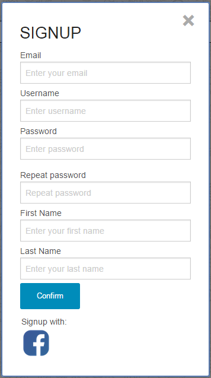
Nel caso in cui tutti i dati inseriti siano stati accettati, il sistema effettuerà in automatico il login
del nuovo utente creato reindirizzandolo alla sua pagina personale. In caso contrario verranno
segnalati i campi dati da correggere.
2.3 - Autenticazione
Se un utente è già in possesso di un account e vuole autenticarsi è necessario premere il pulsante
Login posto nell'angolo superiore destro dello schermo, in
fine inserire il proprio username, la
password e premere OK.
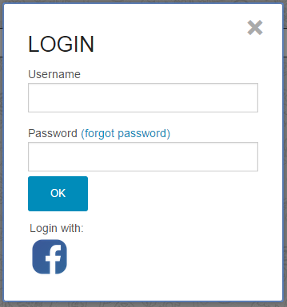
Se i dati inseriti sono corretti il sistema reindirizzerà l'utente alla propria pagina personale,
altrimenti verrà segnalato un errore nelle credenziali inserite.
Nel caso in cui l'utente non ricordi più la sua password, può premere il link Forgot password.
Una volta premuto si aprirà un pop-upG nel quale verrà richiesto di inserire la mail utilizzata
al momento della registrazione al fi
ne di recuperare la password di accesso. Dopo aver inserito
la mail corretta e aver premuto Submit la procedura di recupero password sarà inviata alla
mail indicata. Il pop-upG è mostrato nella
figura sottostante.
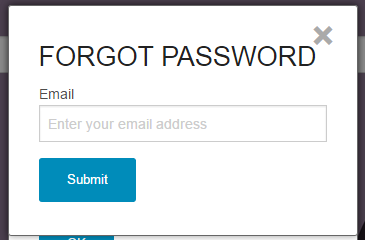
2.4 - Pagina personale
Una volta autenticato, l'utente ha accesso alla sua pagina personale, nella quale sono riportati
tutti i dati relativi a esso e dalla quale può accedere a tutte le funzionalità del sistema.
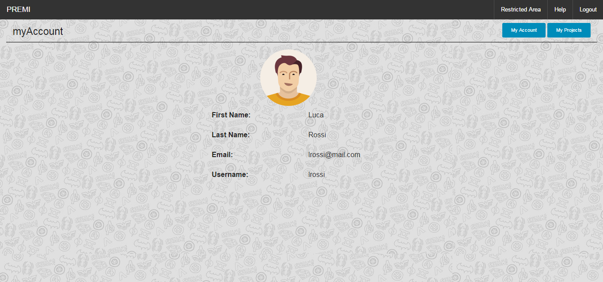
2.5 - Logout
Un utente autenticato può eseguire il logout, da qualunque pagina stia visualizzando, tramite
il pulsante Logout posto nell'angolo in alto a destra dello schermo.
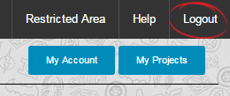
3 - Ricerca di un progetto
È possibile fare ricerche di progetti utilizzando come fi
ltro l'username di un utente oppure il
nome di un progetto.
Per eseguire una ricerca è su
fficiente recarsi sulla pagina iniziale tramite l'utilizzo del pulsante
PREMI posto nell'angolo superiore sinistro dello schermo, scrivere la chiave di ricerca nell'apposita
casella di testo, selezionare il fi
ltro che si vuole utilizzare (Users o Project) e infi
ne
premere il tasto Search.
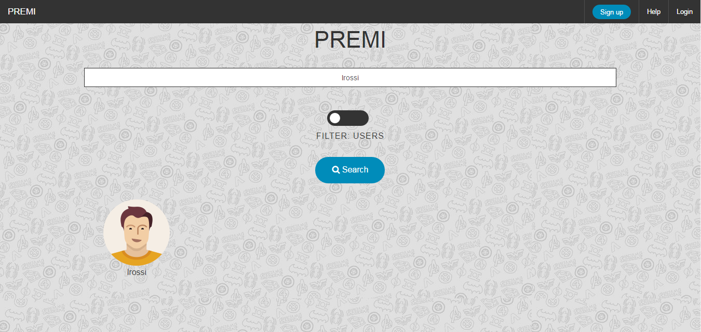
I risultati della ricerca verranno mostrati sotto il pulsante Search, come mostrato nella fi
gura
sottostante.
Nel caso in cui la ricerca non abbia trovato alcun risultato, verrà segnalato con la dicitura "No
results" come è possibile notare nella
figura.
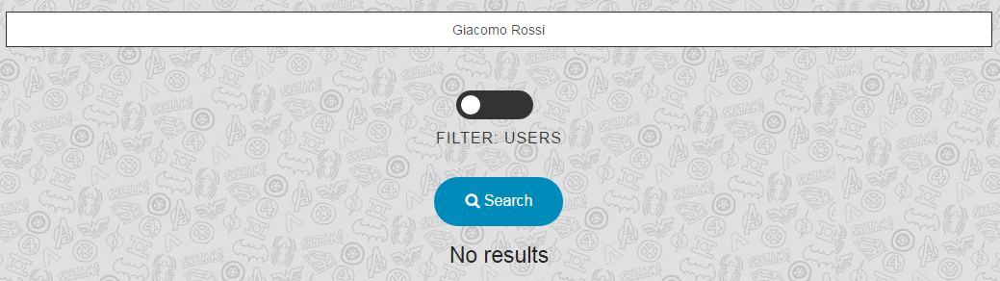
4 - Creazione di un progetto
Per creare un progetto un utente deve essere iscritto ed autenticato. Per accedere alla pagina
di creazione di un progetto l'utente deve premere il pulsante azzurro My Project posto in
alto a destra sullo schermo. Una volta premuto si caricherà la pagina corrispondente. A questo
punto l'utente deve premere il pulsante verde New Project posto in alto a sinistra; si aprirà
un pop-upG nel quale viene richiesto di inserire il nome del progetto che si vuole creare. Una
volta inserito il nome basterà premere il pulsante OK.
Una volta premuto il tasto OK il nuovo progetto sarà creato e aggiunto alla lista dei progetti
dell'utente (vedi fi
gura sottostante).
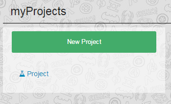
5 - Eliminazione di un progetto
Per eliminare un progetto un utente deve essere iscritto ed autenticato. Per accedere alla pagina
di eliminazione di un progetto l'utente deve premere il pulsante azzurro My Project posto
in alto a destra sullo schermo. Una volta premuto si caricherà la pagina corrispondente. A
questo punto l'utente deve selezionare il progetto da eliminare dalla lista dei progetti in alto a
sinistra. Una volta selezionato il progetto apparirà al centro dello schermo il titolo del progetto
scelto,un'immagine di anteprima della prima slideG del progetto e sotto a questa un menù.
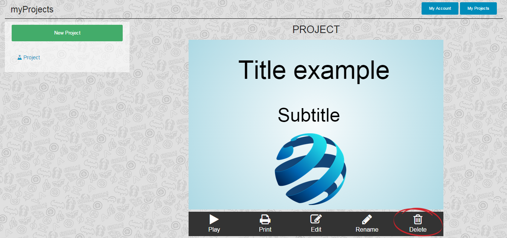
Selezionando dal menù la voce Delete apparirà il seguente pop-upG:
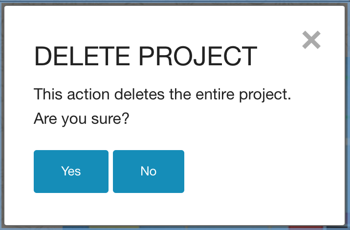
Premendo il tasto Yes si confermerà l'eliminazione del progetto, premendo il tasto No il
progetto non verrà eliminato.
6 - Rinominazione di un progetto
Per rinominare un progetto un utente deve essere iscritto ed autenticato. Per accedere alla
pagina di rinominazione di un progetto l'utente deve premere il pulsante azzurro My Project
posto in alto a destra sullo schermo. Una volta premuto si caricherà la pagina corrispondente.
A questo punto l'utente deve selezionare il progetto da rinominare dalla lista dei progetti in
alto a sinistra. Una volta selezionato il progetto apparirà al centro dello schermo il titolo del
progetto scelto, un'immagine di anteprima della prima slideG del progetto e sotto a questa un
menù.
Selezionando dal menù la voce Rename apparirà il seguente pop-upG:
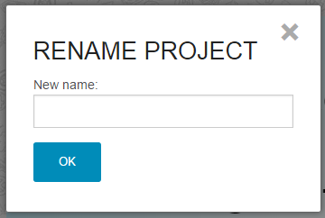
Per rinominare il progetto sarà su
fficiente inserire nell'apposito spazio il nuovo nome che si
desidera dare al progetto e successivamente confermare tramite il tasto OK.
7 - Stampa ed esportazione di una presentazione
Per stampare un progetto oppure per esportare il progetto in formato PDFG un utente deve
essere iscritto ed autenticato. Per accedere alla pagina di stampa ed esportazione di un progetto
l'utente deve premere il pulsante azzurro My Project posto in alto a destra sullo schermo. Una
volta premuto si caricherà la pagina corrispondente. A questo punto l'utente deve selezionare il
progetto da stampare o esportare dalla lista dei progetti in alto a sinistra. Una volta selezionato il progetto
apparirà al centro dello schermo il titolo del progetto scelto, un'immagine di anteprima della
prima slideG del progetto e sotto a questa un menù.
Selezionando dal menù la voce Print si aprirà una nuova scheda dove verrà visualizzata l'intera
presentazione come un'unica pagina web. Le slideG verranno impaginate verticalmente una sotto
l'altra nell'ordine in cui vengono visualizzate nella presentazione.
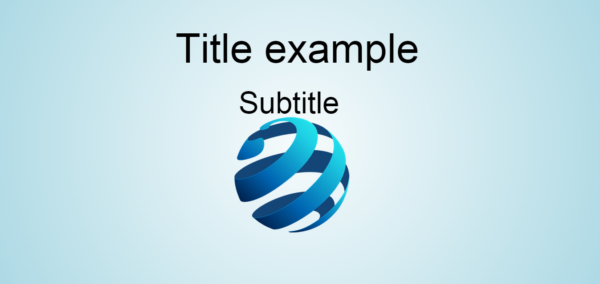
7.1 - Stampa di una presentazione
Nel caso in cui si voglia stampare la presentazione è suffi
ciente utilizzare la funzione stampa
presente nel browserG che si sta utilizzando. Per ogni chiarimento in merito è consigliata la
consultazione del manuale d'utilizzo del proprio browserG.
7.2 - Esportazione di una presentazione
Nel caso in cui si voglia esportare la presentazione in formato PDFG si dovrà utilizzare la
funzionalità di stampa presente in Google ChromeG e successivamente sfruttare la stampa su
fi
le. Di seguito verrà indicata la procedura da seguire, per questa guida è stata usata la versione
42 di Google ChromeG. Una volta selezionata la funzionalità di stampa, apparirà la seguente
schermata:
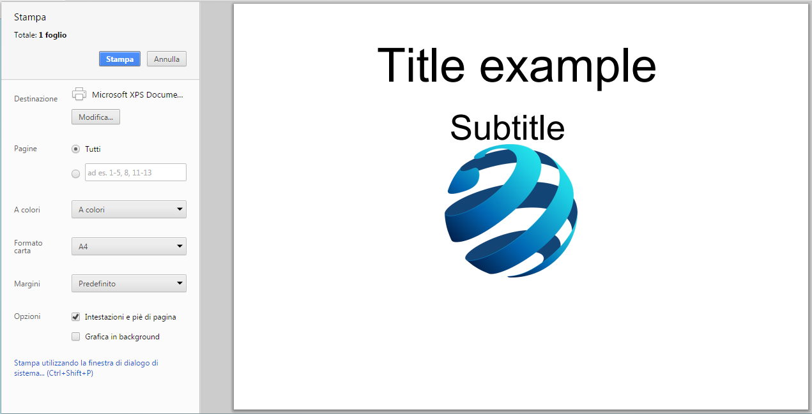
Nel menù laterale di sinistra, a fi
anco alla voce Destinazione selezionare il pulsante Modi
fica...
e successivamente selezionare la voce Sava come PDFG (vedi fi
gura sotto):
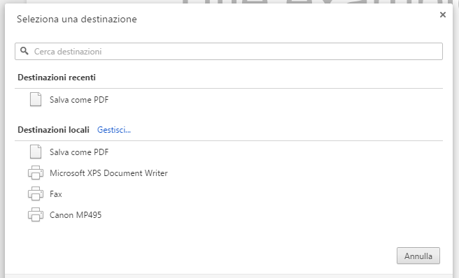
Una volta seguiti questi passi sarà suffi
ciente premere il pulsante di colore blu Salva e scegliere la
destinazione di salvataggio della presentazione.
8 - Creazione di una presentazione
Per creare una presentazione è necessario prima selezionare il progetto dalla lista dei progetti
disponibili. Una volta selezionato il progetto apparirà al centro dello schermo il titolo del
progetto scelto, un'immagine di anteprima della prima slideG del progetto e sotto a questa un
menù. Selezionando dal menù la voce Edit si accederà alla pagina relativa alla creazione della
presentazione, con le relative funzioni.
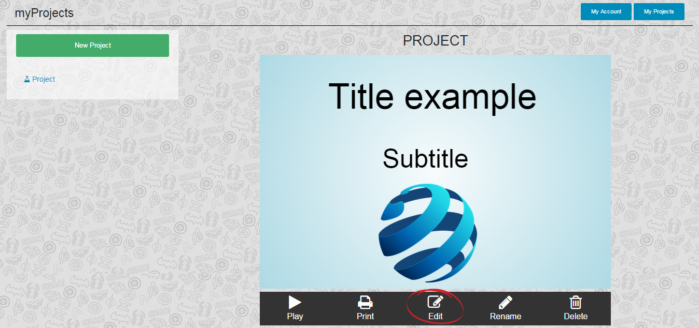
9 - Editor presentazioni
Di seguito vengono spiegati l'utilizzo degli strumenti di modi
fica delle presentazioni.
9.1 - Layout principale
Una volta avviato l'editor delle presentazioni la pagina che appare si presenta semplice ed
intuitiva. A sinistra si trova un menù verticale con tutti i pulsanti che permettono di modi
ficare
la slideG corrente. Al centro dello schermo invece si trova lo spazio di gestione dei contenuti
della slideG, dove è possibile interagire con i contenuti. In alto a destra si trova il pulsante
verde per l'avvio dell'aiuto a schermo.
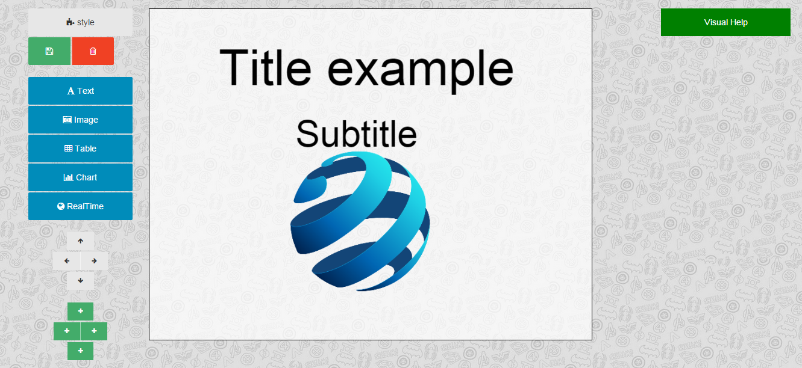
9.2 - Visual Help
Il pulsante posto in alto a destra, di colore verde, Visual Help permette l'avvio di un breve tour
guidato, che mostra mediante l'utilizzo di pop-upG le varie funzionalità associate ai pulsanti
presenti nella schermata di modifi
ca delle presentazioni. Una volta premuto il bottone, apparirà
sullo schermo un piccolo pop-upG di colore nero con una breve spiegazione sulle funzionalità del
pulsante indicato dal pop-upG stesso (come il pulsante viene indicato dal pop-upG è segnalato
nell'immagine sottostante):
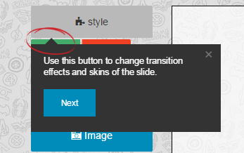
Di seguito verrà analizzato, dall'alto verso il basso, ciascun pulsante presente nel menù laterale
di sinistra.
- Style
- Salva
- Elimina
- Text
- Image
- Table
- Chart
- RealTime
- Navigazione delle slide
- Aggiunta di una slide
Il pulsante Style permette di scegliere gli effetti di transizione e il tema da applicare alla
slideG. Una volta scelte le modifi
che si deve confermare con il tasto OK.
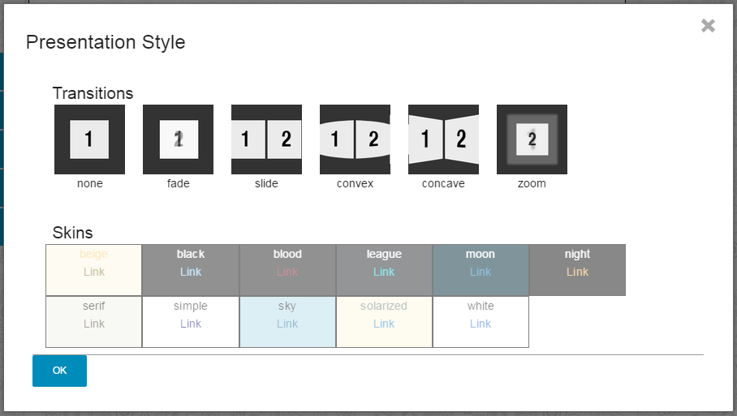
Il pulsante di colore verde è il pulsante che permette di salvare le modi
fiche apportate alla
slideG.
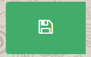
Il pulsante di colore rosso è il pulsante che permette di eliminare tutto il contenuto della
slideG corrente.
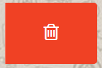
Il pulsante Text permette di inserire del testo all'interno della slideG. Una volta inserito
il testo nell'apposita casella si deve confermare con il tasto OK.
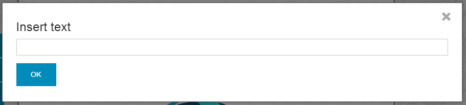
Il pulsante Image permette di aggiungere un'immagine alla slideG corrente tra quelle già
caricate o di caricarne un'altra presente sul fi
le systemG dell'utente. Una volta scelta
l'immagine, questa verrà inserita automaticamente nella slideG.
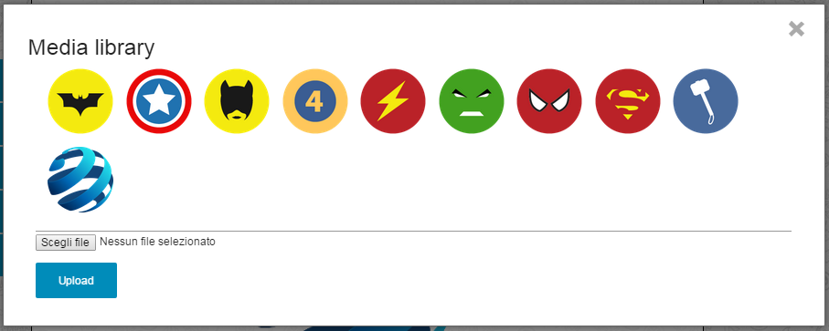
Questa funzionalità non è stata ancora implementata.
Questa funzionalità non è stata ancora implementata.
Questa funzionalità non è stata ancora implementata.
I pulsanti freccia permettono di navigare tra le slideG già create della presentazione. Ad
ogni tasto corrisponde una direzione di spostamento.
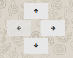
Il pulsante con il simbolo + permette di aggiungere una nuova slideG nella direzione
corrispondente al pulsante premuto.
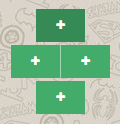
9.4 - Modi
ca di un componente
Per modi
care un componente è su
fficiente selezionarlo nella slideG e modifi
carne gli attributi
dal menù che comparirà sulla destra.
9.4.1 - Text
La grandezza, la posizione e la rotazione della casella di testo possono essere modifi
cate con il
mouse tramite gli appositi punti di ancoraggio che compaiono una volta selezionato il testo. Il
trascinamento in un angolo provoca una variazione della dimensione proporzionale tra larghezza
ed altezza.
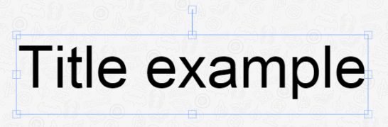
In alternativa si possono modifi
care le proprietà del testo dal menù laterale di destra, nel
dettaglio:
- ScaleX
- ScaleY
- Freccia verso l'alto
- Freccia verso il basso
- Delete
- Text
- Tasto B
- Tasto I
- Tasto U
- Size
- Select Font
- Color
Modi
fica la larghezza della casella di testo;
Modifi
ca l'altezza della casella di testo;
Sposta la casella di testo di un livello verso l'alto;
Sposta la casella di testo di un livello verso il basso;
Elimina la casella di testo;
Modifi
ca il testo contenuto nella casella di testo;
Modifica lo stile del testo in BOLD;
Modi
fica lo stile del testo in ITALIC;
Modi
fica lo stile del testo in UNDERLINE;
Modi
fica la grandezza del testo;
Modifi
ca il font del testo;
Modi
fica il colore del testo.
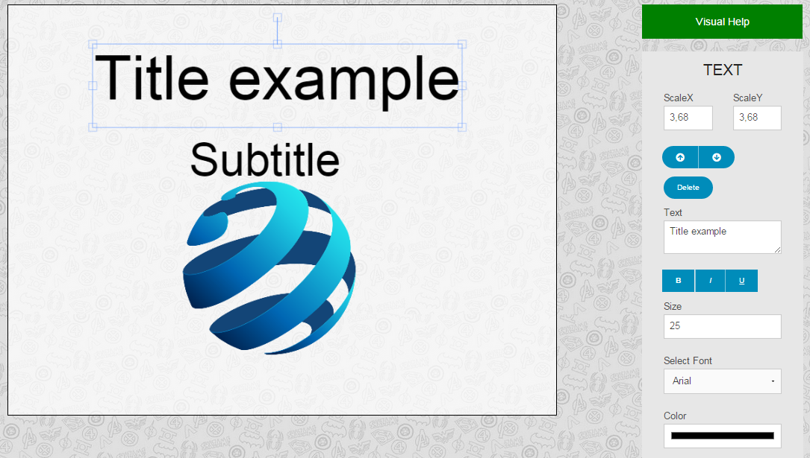
9.4.2 - Image
La grandezza, la posizione e la rotazione dell'immagine possono essere modifi
cate con il mouse
tramite gli appositi punti di ancoraggio che compaiono una volta selezionata l'immagine. Il
trascinamento in un angolo provoca una variazione della dimensione proporzionale tra larghezza
ed altezza.
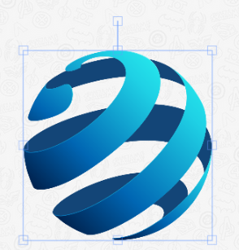
In alternativa si possono modi
ficare le proprietà dell'immagine dal menù laterale di destra, nel
dettaglio:
- ScaleX
- ScaleY
- Freccia verso l'alto
- Freccia verso il basso
- Delete
Modi
fica la larghezza dell'immagine;
Modifi
ca l'altezza dell'immagine;
Sposta l'immagine di un livello verso l'alto;
Sposta l'immagine di un livello verso il basso;
Elimina l'immagine.
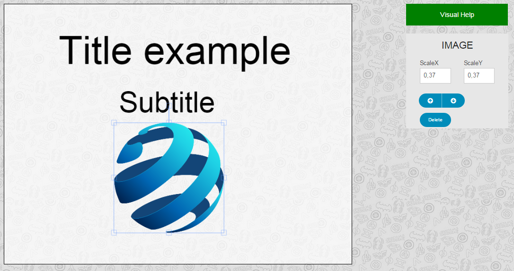
10 - Visualizzazione presentazioni
Per avviare una presentazione è necessario prima selezionare il progetto dalla lista dei progetti
disponibili. Una volta selezionato il progetto, apparirà al centro dello schermo il titolo del
progetto scelto, un'immagine di anteprima della prima slideG del progetto e sotto a questa un menù.
Selezionando dal menù la voce Play si aprirà una nuova scheda nel browserG dove sarà avviata la presentazione.
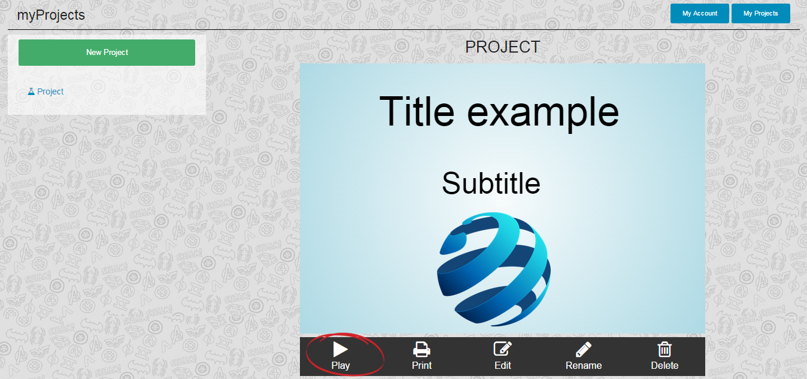
Il menù di navigazione è composto da quattro frecce di colore diverso in base alle slideG che sono
disponibili nella direzione indicata dalla freccia e dal numero di pagina corrente della slideG.
Se la freccia è di colore trasparente non ci sono slideG disponibili in quella direzione, viceversa
se la freccia è di colore blu ci si può spostare in quella direzione verso la prossima slideG. Come
esempio si prenda l'immagine sottostante, che indica la possibilità di visualizzare la prossima
slideG spostandosi a sinistra o in basso.
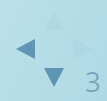
10.2 - Presentazione in modalità ascoltatore
Una volta avviata una presentazione essa verrà avviata di automaticamente in modalità ascoltatore.
Verrà visualizzata la prima slideG del progetto e, in basso a destra, il menù di navigazione
utilizzabile sia con il mouse sia con i tasti freccia della tastiera. Inoltre in basso e per tutta
la lunghezza dello schermo si trova una piccola barra blu che indica l'avanzamento della
presentazione: man mano che si procede con la presentazione essa si sposta verso destra.
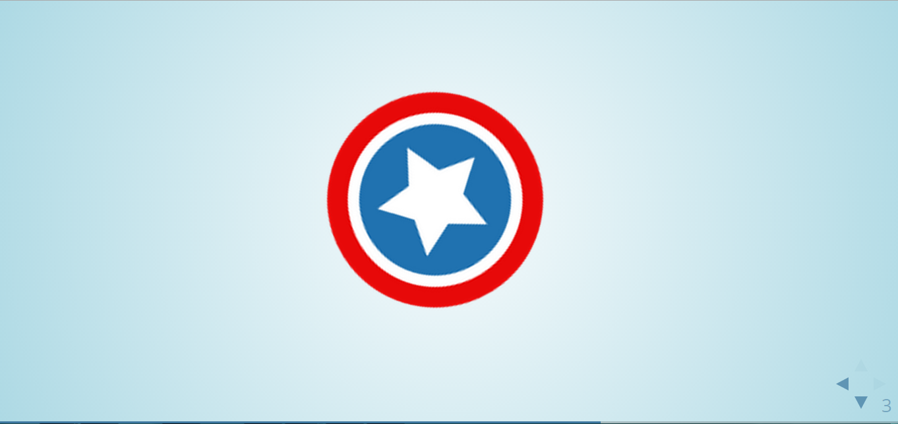
10.3 - Presentazione in modalità presentatore
Per avviare presentazione in modalità presentatore è necessario avviare prima una presentazione
come ascoltatore. Una volta avviata è necessario premere il tasto S della tastiera per avviare
la modalità presentatore.
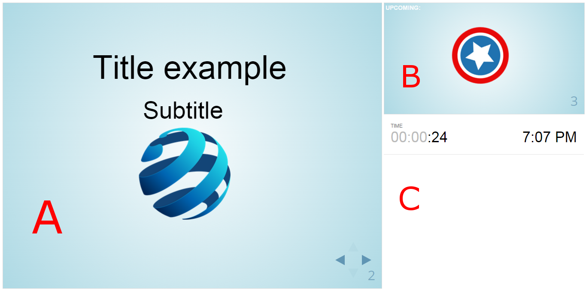
Come si può notare dall'immagine precedente, l'interfaccia grafi
ca di questa modalità presenta
delle funzionalità di supporto al presentatore, dividendo lo schermo in tre parti ben distinte:
- A
- B
- C
in questa parte di schermo viene visualizzata la slideG che attualmente si sta visualizzando;
in questa parte di schermo viene visualizzata la prossima slideG che verrà visualizzata;
in questa parte di schermo vengono visualizzati gli aiuti al presentatore, cioè il tempo
trascorso da quando la presentazione è partita e l'orario corrente. Se si effettua un click
con il tasto sinistro del mouse sul timer questo si resetta.
10.4 - Scorciatoie da tastiera
Una volta avviata una presentazione, in qualunque modalità, sono possibili le seguenti azioni:
- Tasto ESC
- Tasto B
la pressione di questo tasto permette la visualizzazione della matrice completa
di tutte le slideG che compongono la presentazione. Ripremendo il tasto ESC si
ritorna alla visualizzazione normale delle slideG;
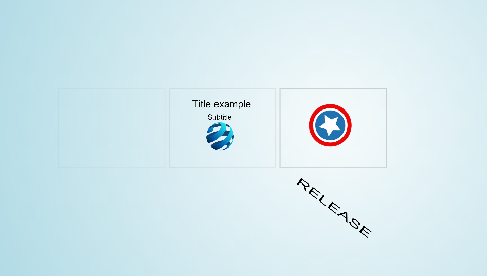
la pressione di questo tasto permette di mettere in pausa la presentazione
oscurando la slideG corrente. Per riprendere la presentazione è suffi
ciente ripremere il
tasto B. Di seguito un esempio di pausa in modalità ascoltatore e sotto in modalità
presentatore.
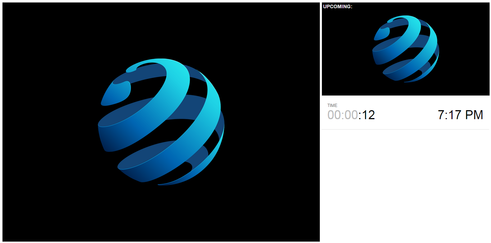
11 - Segnalazione degli errori
Per la segnalazione di eventuali errori l'utente dovrà spedire una mail all'indirizzo support@dazzleworks.it
con la seguente formattazione:
- Oggetto
- Testo della mail
- Allegati
pagina o pulsante che provoca l'errore o un comportamento diverso da quanto
descritto nel manuale utente;
una descrizione, il più precisa e dettagliata possibile sull'errore
riscontrato e il nome utente del profi
lo utilizzato dall'utente;
se possibile allegare uno screenshotG della pagina nella quale l'errore si verifi
ca.
Ogni segnalazione verrà visionata e presa in carico nel minor tempo possibile, verrà infi
ne spedita
una mail di risposta all'utente con le eventuali procedure da adottare per evitare l'errore o con
una segnalazione di avvenuta correzione di quest'ultimo.
12 - Glossario
- B
Browser
Un browser è un programma che consente di visualizzare i contenuti delle
pagine web e di interagire con esse.
- F
Facebook
Servizio di rete sociale lanciato nel febbraio del 2004.
File system
Indica informalmente un meccanismo con il quale i
file sono posizionati
e organizzati o su un dispositivo di archiviazione o su una memoria di massa, come ad
esempio un disco rigido.
- G
Google
Motore di ricerca per Internet il cui dominio è stato registrato il 15 settembre
1997.
Google Chrome
È un browserG sviluppato da GoogleG.
- H
HTML5
Linguaggio di markupG per la strutturazione delle pagine web, da ottobre 2014
pubblicato come W3C Recommendation.
- I
Internet Explorer
È un browser web grafi
co proprietario sviluppato da Microsoft e
incluso in WindowsG a partire dal 1995.
- L
Linguaggio di markup
Un linguaggio di markup è un insieme di regole che descrivono i
meccanismi di rappresentazione (strutturali, semantici o presentazionali) di un testo che,
utilizzando convenzioni standardizzate, sono utilizzabili su più supporti.
- M
Mozilla Firefox
È un web browser open source multipiattaforma prodotto da Mozilla Foundation.
- O
Opera
È un browser web freeware e multipiattaforma prodotto da Opera Software.
- P
PDF
È un formato di
file basato su un linguaggio di descrizione di pagina sviluppato da
Adobe Systems nel 1993 per rappresentare documenti in modo indipendente dal software utilizzato per generarli
o per visualizzarli.
Pop-up
Sono degli elementi dell'interfaccia gra
fica, quali
finestre o riquadri, che compaiono
automaticamente durante l'uso di un'applicazione ed in determinate situazioni, per
attirare l'attenzione dell'utente.
- S
Safari
È un browser web sviluppato da Apple Inc.
Screenshot
Lo screenshot è il risultato della cattura (istantanea) di ciò che è visualizzato
sul monitor del computer.
Slide
Diapositiva digitale.
Software
È l'informazione o le informazioni utilizzate da uno o più sistemi informatici
e memorizzate su uno o più supporti informatici. Tali informazioni possono essere
quindi rappresentate da uno o più programmi, oppure da uno o più dati, oppure da una
combinazione delle due.
- W
Windows
È una famiglia di ambienti operativi e sistemi operativi dedicati ai personal
computer, alle workstation, ai server e agli smartphone.
Acronimi
- W3C
Portable Document Format.
World Wide Web Consortium.